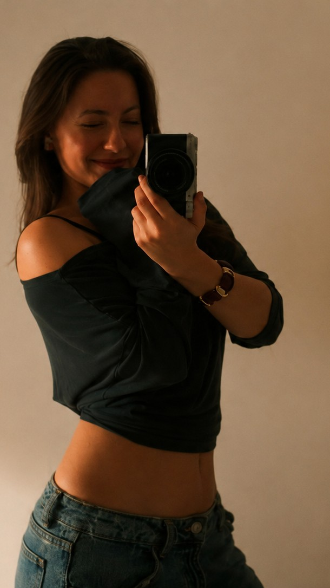
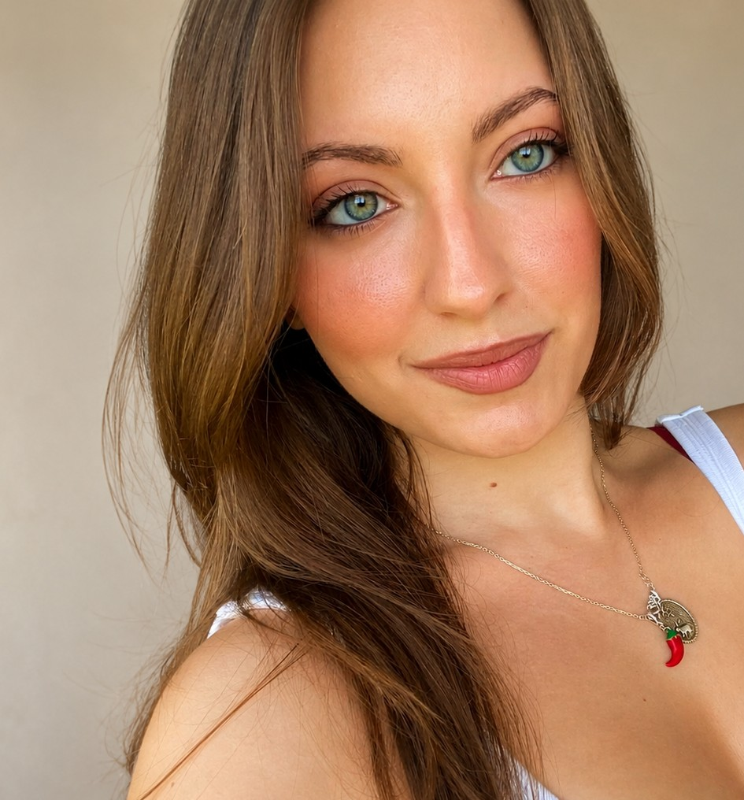

Photography
Interior, exterior, architectural, detail, and lifestyle imagery.
elseaway · A visual journal by Yaren
Atlas
Based in Istanbul
Available worldwide
I follow the feeling of a place—
the light, the people, the little rituals.
elseaway is a visual diary of places worth discovering, staying in, and remembering.
Currently based in Istanbul, available worldwide.
Meet the storyteller ↗

I’m a photographer, visual storyteller, and incurable wanderer. I created elseaway to document the places that make us slow down — quiet corners, sunlit rooms, unfamiliar streets, and the little moments that stay with us.
What began as a love for travelling and photography has grown into a journey of discovering places, staying in them, and telling their stories through my own eyes.
My work is unhurried, observant, and rooted in real life. I’m less interested in simply showing where I’ve been, and more interested in capturing how it felt to be there.
Less posing. More presence.
I create photography and visual content for villas, apartments, boutique stays, and distinctive properties—capturing not just how a place looks, but how it feels. Every collaboration is tailored to reflect the unique atmosphere and story of each space.
What I create
Interior, exterior, architectural, detail, and lifestyle imagery.
Vertical videos designed for Instagram, TikTok, websites, and digital platforms.
A curated collection of ready-to-use photos and videos for your social channels.
Professional imagery for Airbnb, Booking.com, your website, and marketing materials.
Photography and visual stories created in collaboration with places, people, and independent businesses.
A growing collection of places I’ve wandered through, stayed in, and wanted to remember.
Have a place worth remembering?
Available for stays, local businesses, tourism projects,
and beautifully unplanned adventures worldwide.
I don’t just photograph places. I photograph the feeling
that makes you want to stay a little longer.